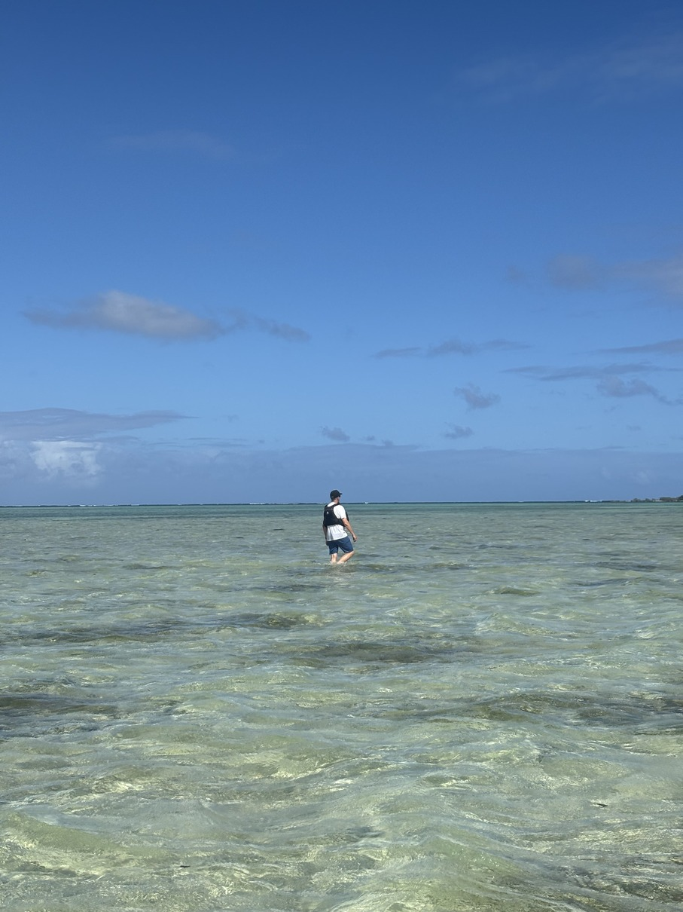
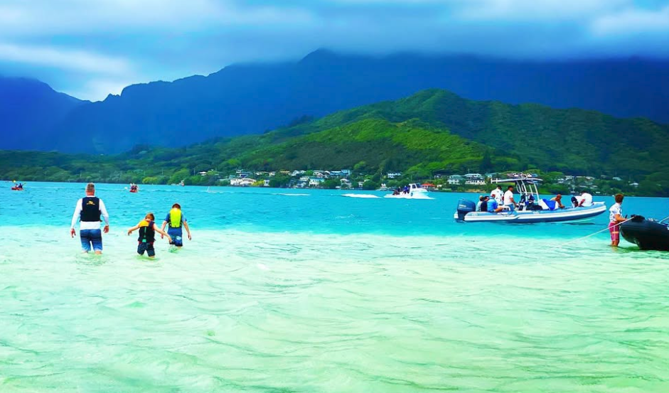

Seemingly far from everything you can still find rest. Like the eye of the storm.

Even after traveling for an hour or two you will always be closer to home than you imagine. You
can always find company in the fellow traveller.